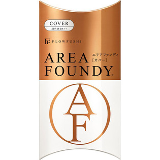

返回列表
产品名称：フローフシ エリアファンディ Cover クリアベージュ

アンリンシャス フローフシ エリアファンディ Cover クリアベージュ ７ｇ
メーカー アンリンシャス
JANコード 4571194362381
商品の特徴
SPF28 PA＋＋
- 成分・分量
- ○内容成分
水、シクロペンタシロキサン、トリエチルヘキサノイン、ジフェニルシロキシフェニルトリメチコン、PG、トリメチルシロキシケイ酸、グリセリン、イソノナン酸イソトリデシル、ヒドロキシプロピルシクロデキストリン、PEG-10ジメチコン、メトキシケイヒ酸エチルヘキシル、PEG-9ポリジメチルシロキシエチルジメチコン、ガーネット末、ビルベリー葉エキス、ポリグルタミン酸、ジエチルアミノヒドロキシベンゾイル安息香酸ヘキシル、t-ブチルメトキシジベンゾイルメタン、ポリヒドロキシステアリン酸エチルヘキシル、（ジメチコン／（PEG-10／15））クロスポリマー、BG、DPG、ジメチコノール、クエン酸Na、硫酸Mg、トコフェロール、フェノキシエタノール、（＋／－）、酸化チタン、酸化亜鉛、酸化鉄、水酸化Al、マイカ、シリカ、メチコン、ジメチコン、ハイドロゲンジメチコン
- 用法及び用量
- １．液をＶＶエリアにポンポンポン。チップで３点に。
２．大和匠筆でポンポンポンとなじませます。